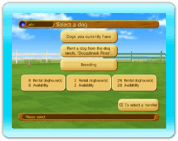

11 |
Elige un perro |
 |
|
Elige un perro que hayas criado para que participe en carreras. Al hacerlo la primera vez, no habrá ningún perro para escoger, así que elige “Rent a dog from the dog ranch ‘Doggybrook
Pines’” (Alquilar un perro de la granja de perros ‘Doggybrook Pines’) para alquilar uno.
Abajo aparecen las dos categorías de perros. Se necesita una perrera vacía para tener un nuevo perro.
A cada entrenador se le asignarán dos perreras al comienzo del juego. Esas dos perreras serán gratis, y se aludirá a ellas como “perreras gratuitas”. Compra perreras extra, y aumenta su número para dar cabida a más perros. Como hay preparadas ocho perreras de alquiler por cada entrenador, puedes tener ocho perros de alquiler al mismo tiempo.
|
 |
 |
 |